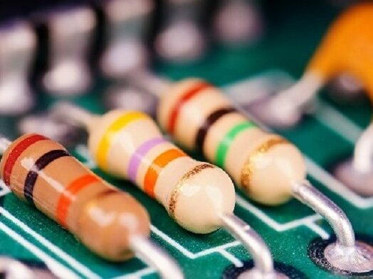

types of resistors
1. fixed resistors
These are the predominant type of resistor configuration, and as the name suggests, they have a fixed resistance value
applications of fixed Resistors
- Ceramic capacitors are used in printed circuit boards that are used in high-density applications
- Their non-polarity makes them suitable for general usage
- They find applications in DC motors as they are used for reducing the RF noise.
- Ceramic capacitors are used in transmitter stations where resonant circuits are used.
2.Variable Resistors
A variable resistor is a resistor of which the electric resistance value can be adjusted

function of Variable Resistors
- adjust the value of current or voltage
how to use it real life example or applications
(a) radio
(b) the lights dimmer
(c) fan speed controller
for more info click here